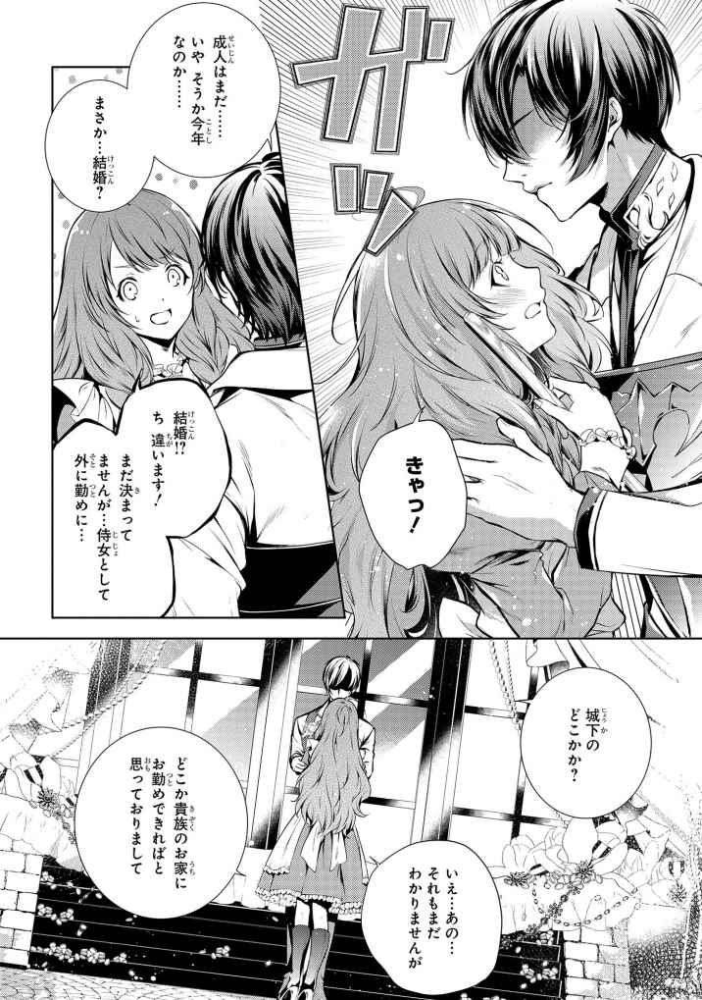

| 竜騎士のお気に入り ノベル＆コミック試読版 | |
| 織川 あさぎ & 蒼崎 律 | |




イラストレーション ◆ 伊藤明十
竜騎士のお気に入り 侍女はただいま兼務中
序章
イヴァルト王国首都。
国の守りとして鉄壁の、偉大なるトルーガ山脈を背にして、縦横に平野を流れる大河の恵みによって発展した都市である。
大河に沿って広がる街を治めるため、この国には通常の騎士団の中に、特殊な部隊が存在する。
――偉大なる空の王者に
その竜騎士だけを集めた部隊が、竜騎士隊と呼ばれている。
その部隊の存在は、周辺国のみならず、大陸の端の端まで伝わっている。
一人の騎士が成し得た竜との
それゆえに、竜を密猟し、他国に売りさばく密猟団の
竜が狩られている現状は、現在人に対して友好的な感情を持つ竜達を悪い方に刺激することとなる。その影響を重く見た国王から命が下され、密猟団の被害を食い止めるための討伐隊が組まれたのは、メリッサが十六歳の成人の日を迎える半年ほど前のことだった。
現地に派遣されることが決まったのは、竜の背に乗り、空をかける、竜騎士達。その中で一番目立つ人物を探して、メリッサは出陣式の慌ただしさでごった返す広場をうろうろと
背が低く、小柄な彼女は、竜騎士達や大きな竜達の間では見えなくなりそうなものだが、にんじんにもたとえられる
「ああ、駄目よ。これは白の女王に渡す分なの！ あなたの分は、もうご主人が持ってるからね」
目を
「もう。先に進めないわ。ねえみんな、隊長さんはどこ？ 教えてくれる？」
ギュ？ ギュー ギュギュ
何やら鳴きながら、周囲と目を見合わせている。そして互いに納得したように、メリッサに視線を向けた。その仕草を見て、メリッサは首を
「まだいらしてないの？ 出陣式、もう始まるのに？」
その疑問に答えたのは、竜達ではなく、そのすぐ隣に立っていた竜騎士達だった。竜と会話をしているようなメリッサの様子に笑いながら、彼らは竜の代わりに、メリッサに答えを教えてくれたのである。
「隊長なら、朝一番から女王の新しい胴具の確認に出たまま、帰ってきてないよ」
「朝食にも来てなかったのにですか？」
「女王様がご機嫌で、そのまま空の散歩に出かけてんだろ。......あ、ほら、帰ってきた」
答えた竜騎士が指をさした空の先に、小さな白い影が見える。
どんどん大きくなるその姿に、この場所にいるすべての竜達が、一斉に空を見上げ、空に向かって
王家の紋章が刻まれた革製の胴具をつけた白く輝く竜体が、優美に空を切り、広場の上空からまったく重さを感じさせることなくゆっくりと舞い降りてくる。その姿を見るために周囲に集まっていた人々は、息を
竜が発着するために空けてあった広場中央部分に、風を
ギュルル
見つけた、とでも言わんばかりに、白の女王が一直線に歩いて来る。
「白の女王！ お帰りなさい！」
大きく手を振り、白の女王を出迎えたメリッサは、そのまま両手を伸ばし、白の女王の鼻先に抱きついた。
「相変わらず、仲がいいな」
仕方ないなと言わんばかりに白の女王の背後から聞こえてきた声に、メリッサは女王に
「隊長さん！ お帰りなさい」
「ただいま。もっとも、またすぐに出かけるんだが」
「これ、朝ご飯も食べないままで出陣は大変だろうからって、母から差し入れです」
差し出した籠の中を指さしながら、メリッサは目の前の騎士をこっそり見上げていた。
つい先ほどまで、空を飛んでいたとは思えないほど涼しい顔で、黒髪をきっちりうしろに流した姿は、その優美な顔も相まって、騎士と言うより文官のようでもある。表情の変化は乏しいが、いかにも貴公子然とした立ち姿に、広場の周囲に集まっていた女性達の熱気が否応なく上がっていく。
白の女王に背を許された、希代の竜騎士ヒューバード。二十五にしてすべての竜騎士を束ねる、最強の騎士。
そう呼ばれるその人は、メリッサにとっては大好きな友である白の女王の
出会った
だからこそ、自分の人生に関わる今の悩みを相談する相手は、この人以外にいなかった。
「あの......帰ってきてからでいいんです。相談、したいことがありまして」
ヒューバードの、白の女王と同じ青い
「今じゃなく？」
「はい。というかもう、相談する時間はありませんよ。式典が始まっちゃいます」
すでに、式典の用意は調い、あとは王族の臨席を待つばかりの状況である。
むしろ、メリッサはそろそろこの広場から出なくてはならない。
急ぎ小袋を手渡したメリッサに、ヒューバードもさすがに状況を理解しているのか、苦笑しながら
「ちょっと、散歩から帰ってくるのが遅すぎたな。わかった。そう時間はかからないだろうが、できるだけ急ぐことにする」
「......急ぐよりも、無事のお帰りをお待ちしてます。本当に、無事に、帰ってきてくださいね」
にっこり
第一章 少女の願い
大陸すべての騎士達からの
その強さは、騎士本人の素質と言うよりも、それぞれが
では竜種の強さはどうなっているのか。実はそれも、竜達の色によって階級分けがされているのだ。それは人によって分けられたのではなく、竜達の中で自然と力関係が発生している。
自然界に存在する色の中で、空に近い色ほど強く、希少になる。
最上は空の青。そして、それに次ぐのは雲の白。空から降り注ぐ稲光の紫と続き、山の緑や大地の
竜の中でもとびきり強く、とびきり美しい、麗しの白の女王。その背に、騎士と言うには細身な男が
空を飛ぶ竜の負担を減らすため、極限まで体を絞り、それでいて、竜の
今、降りてきた白の竜に騎乗している竜騎士は、顔半分までを覆う
白の女王は、竜の発着場に、いつものようにふわりと降りてくる。
その背から飛び降りた自らの主人の姿を確認するように振り返ると、彼女はすぐさま再び空に舞い上がった。
あっという間にその白い竜身を空に紛れさせた女王は、大きく羽を広げると、長くしなやかな尾を風になびかせ、悠々と仲間の竜達が待つねぐらに向かって飛びはじめた。
メリッサは、いつものごとく水場に座り、麻袋に入っていたにんじんを、一本一本丁寧に井戸水で洗って泥を落としていく。
竜達は、飛行のあと、甘味を好む。砂糖でもいいが、甘い野菜や果物を与えたほうがあきらかに喜ぶ。それらの野菜や果物は、竜騎士から注文を受けて食堂の保存庫に一緒に入れてあり、必要なときは、要請に
つい先ほど、竜達が空を飛ぶ姿を見かけたメリッサは、このあとすぐに必要になるだろう野菜の用意をしていた。
この野菜のお届けは、小さな
竜達の、一見恐ろしい外見は、人々にとってあまり好ましいものではない。
だが、メリッサは、小さな頃から竜達が大好きだった。翼が風をはらみ、飛ぶ瞬間の雄大な姿は、どれだけ見ていても飽きない。
メリッサが小さな頃、はじめて間近で見た竜は、光り輝く真っ白な竜。当時、十五歳で正騎士として城に出仕した今の竜騎士隊長ヒューバードの騎竜、白の女王だった。
彼女が竜を好きになったのは、白の女王の影響が大きい。
彼女、白の女王は、自分よりも小さな生き物に寛容で、大らかだった。
大きな竜身の前に、小さな手を差し伸べている子供に、興味深そうに青い
その日から、どうやら白の女王にとってもメリッサは特別な相手になったらしい。
竜は本来、主人の手しか受け入れないが、メリッサはなぜか、白の女王にその手を拒否されることはなかった。
不思議なことに、女王がそうやってメリッサを認めると、他の竜もその手を受け入れ、気がついたときには、メリッサはこの竜舎で、存在する竜すべてに
主人がいなくても、メリッサの手からならそれを受け取るため、竜騎士達はこぞってこの役を彼女に任せた。
白の女王は、メリッサにとっては特別な存在だった。恐れ多いと思いつつも、物心ついてすぐからの、大切な友だった。だからこそメリッサは、今回、成人してここを出ていくことを、白の女王には自分の口から報告したかった。
本当は、就職に関しても、白の女王の主人であるヒューバード隊長に相談するつもりだったのだ。
しかし、討伐に向かった他の竜騎士達は入れ替わりで帰ってきていたのに、なぜか隊長であるヒューバードだけはまったく帰ってこなかった。
結局相談することもできずひと月前となってしまい、大慌てで侍女長に相談することになってしまったのだ。
今、侍女の資格はあっても、正式に貴族家からの推薦を受けたことのないメリッサは、たとえこのまま王宮で侍女として勤めていても、結婚したあとの復職が認められない。結婚後、復職するためには、貴族家の後ろ盾が必要となっているのだ。
その後ろ盾は、最初に勤めるときに推薦を受けた家が行うことが通例となっていると聞き、メリッサは王宮を出ることを決めたのだ。
白の女王は、竜騎士の騎竜だ。隊長が戦えなくなるその日まで、いや、戦いを終え、地上に降りたとしても、最強の騎士の誉れ高い隊長はきっとここにいる。当然、人より長い寿命をもつ白の女王は、隊長の寿命が尽きるその瞬間まで、きっと傍にあり続けるだろう。
だからメリッサは、城を出る覚悟を決めた。
ずっと城で勤めるために、数年でもいい、外で働き、推薦をもらった上で、また城に帰ってくる。その後、
それが、メリッサの唯一と言える望みだった。
竜舎用の野菜を
「......城を出る？ メリッサちゃんが？」
それを聞いた瞬間、ちょうど昼食をとっていた男達が、一斉にその視線をメリッサに集中させた。
普段は食べはじめたら、
両親には、前々から相談はしていたので、今のところ、侍女長から力添えしてもらえることだけを報告するだけですんだのだが、メリッサの場合、両親よりもむしろ、彼らを説得する方が難問だった。
この食堂は、王宮に勤める、戦闘職の者達のための、第二の戦場である。
とにかく量を供するこの食堂は、身分も地位もかなぐり捨て、腹が減ったメシを食わせろとなだれ込む、お上品さを忘れたはらへり騎士や兵士達を満足させるために存在している。騎士であれば、官僚達のための食堂も利用できるのに、そちらでは量的に満足ができないからとわざわざこちらに来る者も多い。
この戦場は、長年ひとりの料理長とその弟子達がすべてを賄ってきた。騎士や兵士達は、一日中勤務している。昼も夜もない彼らのために、この食堂だけは他と違い、一日火を絶やすことはない。
メリッサは、この食堂で腕を振るう、料理長夫妻の間に生まれた一人娘だ。
母が料理長であり、父はその助手である副料理長である。
この夫妻は、ほぼ城から出ることがない。夫妻がいつ休息を取っているのかすら、兵士達は理解していないくらいだ。一家の住む家は、この食堂の屋根裏である。弟子達もみんな、そこで暮らしており、騎士達が求めれば、すぐさまこの食堂は全力で稼働することになっている。
そして、生まれたときからそんな環境で育ったメリッサにとって、この食堂を利用する兵士や騎士達は、みんな家族といえる存在だった。
殺伐とした任務に就く者達が、どれだけ幼いメリッサの姿に
「メリッサちゃんも、もう成人か」
周囲の殺気も何のその、最初に話しかけてきたひげ面の兵士長が、お気に入りの芋のグラタンを豪快に口に入れながら、そうつぶやいた。
「あとひと月で十六です」
にっこり笑ったメリッサは、その兵士長の傍にあった陶器のコップに水を注いだ。
「本当にここを出るのかい？ 王宮の侍女の資格も一応あるんだろう？」
心配そうな表情で、兵士長はメリッサの顔を
「ここにいると、どうしてもみんなに甘えてしまうから。私、ずっとずっとお城の侍女として頑張りたいんです。このまま、なんとなく結婚まで行儀見習いの延長のように過ごすよりも、しっかり就職して、侍女長様みたいな立派な人になって、ここに帰ってくるつもりです。そのほうが、結果的に、ずっとお城にお勤めしていられるはずだもの。侍女長様も、推薦状を書いてくださると
「だ、だったらうちにぐぼぅ！」
突如叫んだ近くにいた若い騎士が、すぐ隣に居た体格のいい兵士の手によって、口にパンを突っこまれて吹っ飛んだ。さらには、その騎士を囲んでいた全員が、手出し厳禁の文字を
今転がった騎士の実家は子爵家だったが、もともとここでは身分は問われず、家名も名乗ることがない。何せ、この国の騎士団で最強なのは、竜騎士という、家柄よりも実力によって成り立つ部隊である。彼らに身分など問うても、意味がない。それゆえに、ここでは誰もそれを気にすることがないのだ。たとえ睨みつけている兵士や騎士達が平民であっても、それを誰かが止めることはない。
少女もきょとんと騎士が吹っ飛ぶ様子を見ていたが、ここではこれは日常茶飯事である。それほど間を置かず、水を求められてそこから視線を外していた。
「だがなぁ。一度出ちまうと、次にここに勤めるには、たとえ資格があっても、改めて試験を受けなきゃならんのだろう。メリッサちゃんの家はここなのに、里帰りもできないぞ。どうするんだ？」
「両親に用があるときは、手紙を出します。それに、いつかはここを出ることはわかっていたんですから、大丈夫です」
「いつかって......」
そんな兵士長に、はにかんだ笑みを浮かべたメリッサは、あっさりと言い放った。
「もう十六になるんですから、私もそろそろ、お嫁に行くことも考えないといけませんし」
「駄目だ駄目だまだ早いっ！」
「そうだそうだ！」
周囲から一斉に巻き起こった反対の声に、目を
「少なくとも、俺達を越えられない
「そうだそうだ！」
ぱちぱちと目を瞬いていたメリッサは、照れくさそうに笑うと、小さな声でありがとうとつぶやいた。
にこにこと笑顔になったメリッサの表情を見て、その場にいた全員も、表情を緩める。
「メリッサ！ 竜騎士隊長さんがお帰りだそうよ。ご挨拶しておくんでしょう？ ついでにそろそろ竜舎に野菜を届けてちょうだい」
その後ろ姿を見送った食堂では、残った兵士や騎士達全員が腕を組んで
「......嫁か。生まれた瞬間も覚えているってのに、もうそんな
「小さかったメリッサちゃんが、もうそんな心配する歳だなんて......。結婚もしてないのに娘を嫁に出す気分だ」
一部の騎士がめそめそとしはじめたのを見て、兵士長はため息交じりに頭を抱えた。
「お前さん達はむしろ、その歳になって、嫁もいないことを心配しろ」
「そんなこと言われてもですね......」
「嫁になってくれるような人がいれば、この食堂を使わず、家に
「特に竜騎士は、嫁が欲しくても、竜が認めないと無理だし。それに関しては、両親もとっくに
平民も貴族も、これに関しては悩みは同じだ。
現在は隣国と一時休戦中とはいえ、ほんの二、三年前までは常に緊張状態にあった。その時代、騎士や兵士のように、命の危険と隣り合わせの職業に就いていた人々は、女性に忌避される傾向にあった。
早婚の傾向がある貴族の出身者にしても、次男三男で構成された騎士達は、跡取りのことを考える必要はないため、幼なじみや
あとは、出世した順に、上司の娘などをもらっている層がいるが、それに関しても、けっこうな歳になってからの結婚になる。
嫁のなり手も子供も希望を持たなかった騎士達は、ここで生まれたメリッサをそれこそ掌中の珠として育てていた。
たとえ若い騎士や兵士達がメリッサに熱を上げようとも、見守っていた年長の騎士達が認めない。求婚は自分達を倒してからだと、まず隊長達が声を高らかに宣言しているだけに、その越えるべき壁は格段に高い。
その壁の中に、騎竜である白の女王を従えた竜騎士隊長までいるのだから、不意打ちでもまず無理である。
ずっと大切に、成人を今か今かと待っていた少女を、今さらどこにやれるというのか。
――気がつけばその場にいたほぼ全員の目が据わっていた。
「......メリッサちゃんの行く先、知ってそうなのは、やっぱり侍女長か」
「推薦状とか言ってましたね」
「......よし、侍女長に探りを入れておくか」
「騎士の方がやりやすそうだな。任せた」
普段はそれほど協調性のない、騎士と兵士全員の心が、今、ひとつにまとまっていた。
「......何してんの、あんたら」
まったく意識を向けなかった方角から突如かけられた声に、全員が一斉に振り向いた。
視線が集中した場所には、今まさに扉をくぐった軽装の騎士達が、
入ってきたのは、今まで任務に就いていた数人の竜騎士達だった。
鎧を外し、軽装になっているところを見ると、任務が終わったところらしい。
「......ちょっと、メリッサちゃんのことで問題が発生してな」
「へぇ......」
ここ数ヶ月、忙しそうに飛び回り、ここに帰る暇もなかった彼らは、話しかけてきた一番若い騎士を除き、全員が疲れきった様子で、ひとつのテーブルにまとまって座り、
あまりにも異様な光景に、今まで食堂にいた騎士も口をつぐむ。
「......お前ら、どうしたんだ？」
兵士長の質問に答える元気があったのは、どうやら最初に話しかけてきたひとりだけだったらしい。
疲れきった声で、ぼそりと告げられたその事実を、全員が理解するまでにしばし時間が必要だった。
その直後、全員から放たれた絶叫は、食堂から少し離れた場所にある竜舎にまで響き渡った。
遠くから聞こえる絶叫を不思議に思いながら、メリッサは足取りも軽く竜舎に向かう。
騎士達の食堂からそれほど離れていない場所に、大きな竜に合わせて、城の一区画をまるまる使った竜舎はある。
入り口を守る兵士に軽く会釈をして中に入ると、まず目に入るのは、光を反射する竜達のお宝の数々である。
天井にある明かり取りの天窓から入る光が、それぞれの竜の
竜は、光り物をため込む習性がある。騎竜には、それぞれ主人が買い与えているのだが、そんな中でも竜達が喜ぶのは、不思議なことに主人達が国からもらった勲章のたぐいである。
竜達に、人の世界の階級や褒賞のことなどわかりはしないはずなのに、彼らは主がそれをつけているのを見つけると、一も二もなくそれを求めて首を伸ばす。
どうやら、それの数が主人である竜騎士の強さだと思っているらしく、誇らしそうに、主人から預かった勲章をずらりと並べて飾っているのだ。
最近騎士になったばかりの新人は、その勲章がない代わりに初報酬の金貨を竜に与えるのが習慣だ。
だから、竜舎はとてもきらびやかになる。
今、顔を出したメリッサの姿を認め、竜達はそれぞれ首を伸ばし、気軽に挨拶してきている。音自体は低いのに、あきらかに甘えたような独特の鳴き声に包まれながら、メリッサはまず、一番奥まった場所にある白の女王の寝床に向かった。
竜達は、自分達の鱗と同じ色を好む。
白の女王も、やはり石ならより白い物を好むし、何より白い花が好きだった。
ねだられて、布で白い造花をいくつも作ったものだが、それらはすべて、彼女の寝床に
だが、その一際目を引く場所に、帰ってきているはずの肝心の白の女王の姿がない。
「あれ、メリッサちゃん。どうかしたかね」
きょろきょろと周囲を見渡していたメリッサは、突然声をかけられ、慌てて振り向いた。
そこには、いつもここにいる竜舎の管理人が、
「あの、隊長さんが帰ってきたって聞いてきたんですけど、白の女王はどうしたんですか？」
「ねぐらに飛んで行ったらしいよ」
「ねぐら、って......辺境の渓谷ですか？」
この大陸唯一と言われる竜達のねぐら、繁殖地でもある渓谷は、馬車で一週間ほどの場所にある。竜で飛べば、途中の川や山を
竜騎士達は単独で行動することはなく、たとえ隊長でも、任務のために移動するなら、もう一頭いなくなっているはずだった。
しかし、周囲を見渡してみても、女王以外の場所に空きはない。
「......お仕事ですか？」
その疑問に答える声は、メリッサの背後から響いた。
「違う」
慌てて振り返ったメリッサは、そこに立っていた相手の姿に驚き、
本人の正体を知らなければ、竜舎の管理人と間違われるのではないかと思われるような、くたびれた姿をしたヒューバードがそこにいた。
どことなく薄汚れた騎乗服と、手入れの行き届いていない黒髪の頭と無精
歩き方からほんのわずかな仕草まで、女王に
だが
普段からかけ離れたその姿から、メリッサがなんとなく理解できたのは、この人が
そもそも、騎竜である白の女王がいないのに、その背にいるはずのこの人がここにいること自体がおかしい。その疑問は、当然のように口をついて出てしまった。
「隊長、さん？ ......白の女王はいないのに、なんで隊長さんはいるんですか？」
「あ～......白はちょっと、ねぐらから動ける状態じゃなくてな。ただ、私の方が、とにかく急いで手続きが必要だったから、ここまで運んでもらっただけなんだ」
気まずそうにかりかりと頬をかきながら、何やら言い
「手続き？」
「今度、家を継がなくてはいけなくなった。だから本日付で退役したんだ」
「はあ......」
それを聞いたメリッサが最初に思ったのは、退役ってなんだろう、ということだった。
もちろん、その言葉は知っている。父も、退役した騎士なのだから、知らないわけじゃない。
だが、その言葉の意味を頭の中から引っ張り出してくるのに、しばらく時間がかかってしまったのは、ある意味仕方のないことだった。
一度竜騎士となったら、たとえ何があろうと、死ぬまで竜は傍を離れることはない。家を継ぐことがあっても、竜がいては他の仕事はできない。一度竜と縁を結べば、その人は生涯竜とともに国に仕えることになり、それをやめるなどあり得ないのだ。
だからこそ、今目の前の人が告げた退役の意味が理解できなかった。何か別の意味があるのかとまで思ったほどだ。
「......退役って、なんですか？」
「え？ ああ、今日で、竜騎士隊をやめることになったということだが」
メリッサと竜舎の管理人にそう報告した隊長は、そのまま自らの騎竜である白の女王の寝床を見て、ため息を吐いた。
「これ、すべてを持って帰るのか。一個でも忘れたら大変なことになりそうだな......」
ふむ、と
常日頃からこの人は、竜に乗る以外の仕事など、しないしできないと断言していた。白の女王の背を許された人物を、長と仰げる。それが、今この国の竜騎士達にとって、何よりの誉れでもある。やめますと言われて、簡単にはいどうぞとは、国や隊員達が許すはずもない。メリッサだって、とても信じられなかった。
「隊長さんが、竜騎士を、やめることって、できるんですか？」
一気に血の気のひいた表情で、ようやく声を絞り出したメリッサに、隊長はこくりと
「うちは、ちょっと特殊な事情がある家でな。国王にも認められた。仕方ないんだ」
「で、でも、あの、白の女王は......」
「白ももちろん連れて行く。あれは私の命と
穏やかな笑顔で答える様子は、日頃メリッサが見ていたものと変わったところもなく、天職だとまで言っていた騎士をやめてしまうとは、とても思えない。
竜舎の管理人も同じ気持ちだったのか、しきりと首を
「じゃあ、白の女王は、もうここには帰ってこないんですか......？」
メリッサのか細い声での質問に、希代の竜騎士は何やら少し慌てたように、首を振った。
「たとえ騎士をやめても、立場が変わるだけで、陛下にお仕えすることに変わりない。だから、用があればこちらに飛んで来るし、そのときには会える。うちの白も、そのつもりのようだし」
それを聞き、メリッサは、ヒューバードの家がある程度の身分のある家だと察した。
跡継ぎが他におらず、家を継がなければならない、王に直接仕えることのできる貴族の家が、ヒューバードの実家なのだと察した瞬間、退役という言葉がどうあっても覆らない事実なのだと、メリッサの
「あの......実は、私もここを出ることになりまして......」
白の女王に別れの挨拶をしたかった、とは、口にすることができなかった。
メリッサから、ここを出るという言葉が出た瞬間、隊長の手に握られていた桶とブラシが乾いた音を立てて床に落ちたのだ。その顔から、音を立てそうな勢いで血の気が引き、自身の竜に勝るとも劣らないほど白くなった男は、ゆらりと体を揺らめかせると、まるで
「きゃっ！」
その思わぬ力強さに、逆にメリッサの体が傾いだ。
「成人はまだ......いや、そうか今年なのか......まさか、結婚？」
その顔から、感情が抜け落ちていた。
普段、メリッサにだけわかると言われる、薄いながらも穏やかな笑顔しか見たことがなかったので、はじめて見た表情に驚き、硬直していた。
「え、あ、ち、違います。まだ決まってませんが、侍女として外に勤めに......」
「城下のどこかか？」
「いえ、あの、それもまだわかりませんが、どこか貴族のお家にお勤めできればと、思っておりまして、その......」
隊長は、竜騎士をやめると告げたときよりもよほど切羽詰まった表情をしている。
何がそんなにこの人を慌てさせたのか、メリッサにはさっぱり見当がつかなかった。
むしろ、ずっとこの人達はここにいると思っていたメリッサの方が、困惑の度合いは大きい。そう思っていたからこそ、一時的に城を離れるつもりだったのに、まさか、先に、白の女王とこの人が城を去る日が来るなんて、考えたこともなかったのだ。
足元から、どんどん力が失われていく気がして、それに比例して、
今にも
「侍女長様に、今、お勤め先を探していただいているんです......」
震える声でそう告げたメリッサに、隊長はなぜかぎゅっと
「侍女長......わかった」
何がわかったのかと聞き返す間もなく、律儀に桶とブラシを拾い上げると、隊長はくるりと身を
メリッサは、あっという間に視界から消えた隊長を
ぎこちなく振り向くと、すぐ傍に、目を丸くして、ぽかんと口を開けた竜舎の管理人がいた。
そしてその頭上に、一番近くにいて、おそらくいつものように挨拶をしようとしたのだろう、首を伸ばした緑色の竜が、やはり何やら呆然と、隊長の後ろ姿を見送っているのを見つけてしまった。
よくよく見れば、今竜舎にいる竜達で、昼寝をしていなかった全頭が、ぱかんと口を開けた間抜けな顔で、出入り口を見つめていた。
今の隊長の態度に驚いたのが自分だけではなかったことに、そんな場合ではないというのに、妙な
一週間、メリッサは城を出る前の挨拶と説明に奔走することになった。
両親の食堂に食材を卸す商人や、城で一緒に働いていた先輩達。そして、自分と同じように、この城で両親が住み込みで働いている子供達にも、挨拶をして回る。
甘えることのできない環境で頑張りたいと言うメリッサを、みんなが応援してくれていた。メリッサ自身は、この選択について、本当に正しかったのかわからなくなってしまっていたが、すでに成人まで間がない今となっては、他の道も選べない。
そうやってひとりになるたびに思い悩んでいたメリッサの元に、勤め先が見つかったと知らせが届いたのは、はじめに侍女長に報告してから五日目のことだった。
そして今日、その推薦する貴族のご当主が、メリッサの両親にもぜひ挨拶をと、食堂まで訪ねてくることになっていた。
「じゃあ、あちらの屋敷に行く前に、城で面接してしまうってのかい？」
珍しく、厨房ではなく食堂に姿を見せている母が、入り口を睨みつけながらそうつぶやくと、父もその隣で、首を傾げながらメリッサに視線を向けた。
「侍女の面接って、両親も揃ってとか言われるものか？」
足を
侍女長が指定した時間は、こちらの事情をよくわかっているとしか言いようがない、両親の手が若干空いている朝食が終わったばかりの時間だった。
両親は、珍しく仕事着を脱ぎ、きちんと着替えて食堂で待っていた。
「......ところでさ。なんでみんな、仕事も行かずにここにいるのよ？」
母の言葉に、父も頷く。
今の時間、朝食が終わったところで、普段なら食堂は閑散としているはずなのだ。それなのに、現在は満員状態である。何ごとかと思っても仕方がないだろう。
「なに、お茶休憩だ」
「
「今日は休みだ」
そう堂々と言い放ち、兵士や騎士の多くが、一家とともに侍女長を待ち構えているのだ。
「そもそも、紹介状だけじゃなく、事前に自分で面接するなんて言い出す貴族は聞いたことがない。どんな奴が来るのか、しっかり見極めないとな」
「これだけ兵士と騎士が並んでりゃあ、たとえ貴族といえど、ろくでもないことは言い出せないだろう？」
頼もしい父兄達である。実の両親より、ある意味で頼もしい。
だが、自分のために仕事を後回しにしているのなら、解散して欲しいと伝えようとしたところで、タイミングがいいのか悪いのか、侍女長が食堂に姿を現してしまった。
メリッサにとっては、生まれたときに取り上げてもらい、侍女としての教育を施してくれた、もうひとりの母のような存在で、母の友人でもあるため、この食堂でも顔なじみである。
今日も侍女長はいつも通り、黒髪をきっちりとまとめ上げ、背筋を伸ばした
「お待たせしてしまいました、か？」
侍女長の視線が、両親から、周囲を取り囲む人々に向けられた。
「......みなさん。お仕事はいかがされたのでしょうか？」
「大丈夫だ。非番の奴しかいない！」
そう堂々と言い放ったのは、先ほどはお茶休憩をしていると言った竜騎士隊の副隊長だった。
侍女長は、何やら言いたげではあったが、ひとつため息をついて、彼らの同席を認めた。
言い出したら聞かないのは、メリッサだけではない。むしろメリッサが生まれたときから我が子のように見守り、育ててきた父兄代わりの彼ら騎士や兵士達の方が、より頑固なのだ。
「どうぞ、お入りください」
侍女長は、背後の扉に声をかけ、客人を中へと促す。その人が姿を現した瞬間、侍女長と両親以外の全員が、ものの見事に固まった。
「......辺境伯様。こちらのご一家について、説明はご入り用でしょうか？」
その人が辺境伯と呼ばれた瞬間、硬直していた全員の目が大きく見開かれた。
「必要ない。十年間、毎日通っていたのに、まだ聞かなければいけないことなどないだろう？」
十年間、略式の軍服でこの食堂にい続け、家の事情で退役したばかりのはずのヒューバードが、見たことのないごたごたと飾り付けられた貴族の正装姿で、そこにいた。
その場で固まっていた全員が、かくんと顎を落としたところで、侍女長は改めてメリッサに向き直った。
「メリッサ。あなたの勤め先として、辺境伯がぜひにと仰いましたので、お連れしました」
「へ、へんきょう、はく、さま？」
「隊長!? 」
「隊長、あんた、辺境伯家の人間だったのか!? 」
食堂に残っていた数人の竜騎士が身を乗り出し、驚きを
「本日、無事に叙爵されて辺境伯となった。本当は、もう少し早くに会いに来るつもりだったが、侍女長から、ちゃんと叙爵されたあとじゃないと紹介はできないと、突っぱねられてしまったんだ」
ヒューバードは、メリッサの正面に立つと、いつものように少しかがんで、メリッサと視線を合わせ、
「メリッサ。侍女になるなら、うちにおいで。うちはちょっと変わったところに屋敷があるから、君のような子じゃないと、勤められないんだ」
まだ、ヒューバードの身分に頭がついていけていなかったメリッサは、その目を見て、ようやく落ち着きを取り戻した。ヒューバードの、いつもと変わらない声に、引き
「......私のような、とは、どういう意味なのでしょうか」
メリッサの問いに、辺境伯となったヒューバードは、ちょっと困ったような表情で首を傾げた。
「メリッサは、辺境伯領がどういう場所か、知っているか」
その問いに、メリッサは侍女教育と、竜舎の入場資格を得るために学んだ知識で即答した。
「辺境伯領は、王国の西端にある竜の渓谷と呼ばれる場所の守護を行うために王国が特別に設けた領土です。竜の渓谷を守ることで、周辺国家へのけん制とともに、隣国に繋がる主要街道の警備と、竜達の保護、そして竜騎士の選定の儀式を担っておられます」
「その通り。その職務から考えれば当然のことなんだが、我が家は竜のねぐらがある渓谷のすぐ傍に屋敷がある。......だから大量に、来るんだ」
「......何が、でしょう」
「野生竜が」
それは大変である。
何が大変と言って、竜達は知性はあるが遠慮はない。ついでに、好奇心は
竜達にとって、他の生き物はもれなくちょうどいい
それが主人がいる騎竜などなら、主人が止めればやめてくれるが、野生竜となれば、止めれば止めるほど、それを面白がるだろう。
「我が家に勤めるための最低条件は、竜に耐性があること。竜のあしらい方を知っているなら、なお良し。メリッサなら、なんの問題もないだろう？」
確かに、その通りだった。
周囲で話を聞いていた父兄達まで一斉に頷くほどに、その通りだった。
「うちに来てくれるなら、給金は王宮侍女の月給の倍を出してもいい。ついでに、竜に関わることにもなるので危険手当ももちろんつける。......ただ、竜が常時、街の上空を飛んでいる環境なので、当然のことながら
ヒューバードは、手を差し出し、メリッサにそう尋ねた。
「......ぜひ、お願いします！ 寂しい場所だなんて、思いません。いつでも竜が見られるなんて、私にとって最高の場所です」
メリッサにとってそれは、断る理由を探すほうが難しい好条件だった。
もう少し詳しい仕事内容を説明したいと言われ、メリッサはヒューバードと連れだって、毎日通っていた竜舎に向かった。
「礼装お似合いですね」
この人が、軍装以外でいるところをはじめて見たメリッサは、そう言いながらも、寂しさが隠せなかった。
軍装でいる間は、遠慮なく兄のように思えていた人が、礼装を身に纏い、貴族としての姿を見せたことで、もう今までのように気兼ねなく隣に並ぶことはできなくなったのだと見せ付けられているような気がしたのだ。
ヒューバードは、そんなメリッサに、困ったような表情で首を傾げた。
「私としては、こんなひらひらしたものは着たくはないんだが......。なあメリッサ。この服、いかにも白が釣られそうだと思わないか」
「ああ、白の女王は、ひらひらした服が好きですよね。......レースは、寝屋飾りとしてむしり取られちゃいますね、きっと」
「竜舎に行くたびに、裸にされるのは困る。だからこれは、白がいない今だけの服だな」
「じゃあ、別の礼装を考えないといけませんね」
「......軍装を少し装飾を増やす程度で勘弁してもらえないかと思っている」
騎士ではなくなったヒューバードが、軍の施設でもある竜舎に入れるのかと思ったが、辺境伯はすべての竜騎士の選定に関わるため、関係者として扱われているという理由で、難なくその中に入ることができた。
飾りが何もなくなった白の女王の寝床を、二人無言でただ見つめる。
「......何もなくなっちゃいましたね」
「すべて持って帰れと言われている。箱に詰めて、私が乗る馬車で運ぶことになっている」
「......白の女王に乗らずに、馬車に乗って帰るんですか？」
「白は今、ちょっと飛んでる場合じゃないからな」
一瞬口ごもったヒューバードは、ほんの少し、声を落として、メリッサに告げた。
「亡くなった兄の竜が抱いていた卵を、今、白が守っているんだ」
「......お兄様の竜？ その竜は......」
「兄が亡くなり、絆を結んでいた竜も死んだ。竜は強いが、命の絆を結んだ人間が寿命以外で亡くなれば、それを追うように竜も死んでしまう。その竜は抱卵中で、もともと密猟者に
「もしかして......隊長さんは、そのお兄さんの跡を継いで」
「そういうことだ。......最近、病がちだとは聞いていたが、こんな急に亡くなるほど、弱っているとは聞いていなかった。おかげで家も慌ただしくてな。私の退役と叙爵も、あわせて一週間ほどで終わらせて急ぎ帰らなければならない。本来なら、そのどちらも、そんな短期間で許されることはないんだが......」
一週間前、帰ってきたヒューバードの憔悴した姿がメリッサの頭をよぎる。
憔悴して当然だったのだ。急に家族を亡くし、自ら天職とまで言っていた竜騎士を辞めなければいけなくなって。仕方ないの一言で
それが、あの憔悴の理由だとしたら、メリッサの個人的なわがままで今も煩わせているのが、どうしようもなく辛い。先ほど、辺境伯家の侍女になれることを喜んでしまったことすらも申し訳なくて、かといって、謝罪することもできず、ただうつむくしかできなくなった。
ヒューバードは、そんなメリッサの様子に慌てたように腰をかがめて、その顔を覗きこむ。
「メリッサ、君が泣く必要はない」
「でも......こ、こんな、ことだって、知らなくて......ご、ごめんなさい......」
「謝る必要もない。私が跡を継ぐしかなかったんだ。むしろ、君の成人を祝わなきゃいけないときに、こんなことを聞かせた私の方こそ悪かった。......泣き
「な、泣いて、ません」
鼻をすすってしまったら、ごまかしようもないけれど、ぐっと唇を
「それに、私は、運がいい。今このタイミングで、メリッサが成人してくれた。......私を、助けてくれないか」
「......助ける、ですか？」
ヒューバードは頷き、メリッサの手をとった。
「これは逆に、メリッサが成人していないと、頼み辛いことなんだが......」
一瞬口ごもり、いつも即断即決だった人らしくないためらいを見せたのち、意を決したような視線がメリッサを
「私の、恋人のふりを、してくれないか」
告げられた言葉に驚き、メリッサの涙がぴたりと止まった。
「実は兄には婚約者がいたんだ。その婚約者とは、家同士の繋がりを期待しての婚約だったそうで、そのまま私との話を進めて欲しいと言われているんだが......私はその話を受けるわけにはいかないんだ」
「......どうして、ですか？」
「私には、白がいる。竜と絆を結んだ人間の結婚は、その絆の竜の意向が最も優先される。......白が、その彼女を嫌っているんだ。今はずっとねぐらにいて、顔を合わせずにいるから被害もないが、私の傍にその婚約者がいること自体が気に入らないらしく、かなり
排除という言葉ではあるが、大きな竜が人間に対して害意を持てば、それはすなわち死に繋がる。命が関わるというのに、我を通そうとするような人がいるとは思えなくて、思わず首を傾げてしまった。
「それを、正直に伝えて、お断りするわけにいかないんですか？」
「もちろん伝えたが、聞き入れてはもらえなかった。その婚約者は、この二年ほどを屋敷で兄と暮らしていたらしい。今さら結婚はできないなど、受け入れられないと言われている。兄にだって竜はいたし、その竜は受け入れていたのだから、白だって言い聞かせればなんとかなるだろうと簡単に言っているんだ」
「......そんなの、無理ですよね？ 竜は、一度嫌った相手を、再び受け入れたりすることはありません」
たとえ竜騎士でも、自分の竜以外には、よくある話なのだ。そういう場合、竜の寝床も位置替えしなければならないほど気を使う事態になる。そうなった場合、その竜と騎士が顔を合わせずにすむように、小隊を別にしてしまうのだ。その小隊は、飛び立つ場合も時間をずらされ、たとえ同じ場所に出動となっても、経路を別にしてしまう。
竜騎士ですら、そこまでしないと危険とされている。メリッサのように、どの竜にも変わらず受け入れられるほうが、珍しいのだ。
「そう、無理だ。メリッサはそれをわかってくれるが、その婚約者は、聞く耳を持たなかった」
困惑を隠しもしない表情で、ヒューバードは首を振った。
「だからメリッサ。うちに来て、恋人として振るまって欲しい。メリッサは白のお気に入りだから、君がいるだけで白も落ち着く。正直なところ、その婚約者と白の、両方の相手をするのが大変なんだ。せめて白だけでも落ち着いてくれれば、私としては大いに助かる。だから、ふりもいやなら、それはなかったことにしてくれてかまわない。どちらにせよ、先ほど食堂で伝えた条件で雇うことに変わりはないし、待遇も変わらないが、恋人役を引き受けてくれた場合は、それに必要になりそうな衣装や道具は、すべてこちらで用意する」
「......私で、お役に立てるんですか？」
「ああ、大いに役立つとも。庭に降りてくる野生竜達も、メリッサならきっと仲良くなれる」
笑顔のヒューバードに、メリッサも釣られて笑顔を見せる。
「......私の辺境伯家でのお仕事は、じゃあ、隊長さんの恋人役ですか？」
「遊びに来た竜達の接待と、私の恋人として一緒に過ごす姿を見せ付けるのが主な仕事だな。どちらも重要で、どちらもメリッサにしか勤まらない仕事だ」
あっさり言われた仕事内容に、メリッサは思わず噴き出した。
「竜達のお相手と、恋人役って、一緒にしてしまってもいいんですか？」
それではまるで、メリッサにとって竜と恋人が同等のようだ。しかし、それに異を唱えなければならないはずのヒューバードは、なんのためらいもなく頷いた。
「かまわないに決まってる。私の周囲は、常に竜だらけだ。一緒にいてもらうなら、むしろ私より竜の相手を優先するくらいじゃないと困る。だからこそ、それができない婚約者なんか、いてもらっちゃ困るんだ」
そのあまりの言いぐさに、いよいよ笑いが止まらなくなったメリッサは、そのすべての役割を引き受けることを、ヒューバードに約束した。
メリッサの、辺境伯家での勤めは、侍女の勤めとヒューバードの恋人のふり。そして、庭に降りてくる野生竜達の接待。
それらはメリッサにとって、楽しみしかなさそうな仕事内容だった。
第二章 空は青く
はじめてメリッサがその特別と出会ったのは、まだ五歳のとき。なんの変哲もない毎日の、ほんのちょっと珍しい散歩のときだった。
いつも忙しい父が、たまたま空き時間ができたので、珍しいものを見せてやると散歩に連れてきてくれたのだ。
父はその当時、まだ見習いとして働いていた。
――その特別は、今までずっと、入ってはいけないと言われていた場所にいた。
竜舎の中で、細身の優美な体をゆったりと
彼女についた呼び名は、白の女王。その名に
その特別な彼女に見とれて、気がつけば父の手を振り切り、彼女の前にふらふらと足を進め、背後からの制止の声も耳に入れずに女王の前に立っていた。
「危ない!! 」
慌てて伸ばされた腕に勢いよく抱き上げられながらも、水色の丸い大きな目を
――グルル......
女王は、確かにメリッサと目を合わせると、楽しげに
その場を満たした竜達の合唱は、
がたんと大きな音がして頭が大きく揺さぶられ、メリッサは意識を取り戻した。
どうやら、うたた寝をしてしまっていたらしい。
自分が今どこにいるのかわからなくて、慌てて周囲を見渡し、そこが馬車の中であることがわかってようやく、今の状況を思い出す。
成人して一ヶ月。王都の辺境伯家の別邸で研修を終えて住み慣れた王都を出発し、馬車を乗り継ぎ一週間。生まれてはじめての旅の終着点は、この国で最も辺境の、コーダという街にある辺境伯の
隣国との関所があるこの街は、人の数こそ多いが、宿場と関所、そして領主の館とそれに併設された兵の駐屯地の他には、大地に横たわる、広大な裂け目しか見当たらない、殺風景な場所である。
その殺風景な場所を支配するのは人ではない。この地は、その裂け目に住まう、竜達の楽園なのだ。人々は、もう少し王都寄りにあるクルースという街に主に住んでいるために、コーダにはほぼ民家はない。
人の住まう街、クルースに一泊し、翌朝、目的地であるコーダ行きの馬車に乗り込んだのは、老夫婦とメリッサだけだった。
この馬車は、関所を越え、隣国キヌートへ向かう道をひた走る。老夫婦は、どう見てもあどけない、それなのに、成人した女性と同じようにきっちりと三つ編みを頭に巻き付けた姿の少女を見て、思わず声をかけたらしい。
「大丈夫？ よく眠っていたようだけれど、旅疲れかしら。......お嬢さん、隣国までおひとりなの？ 良かったら私達とご一緒にいかが？」
親切そうな夫人に声をかけられ、メリッサはそれに
「ご親切にありがとうございます。ですが私の目的地は、コーダにある辺境伯のお館なんです」
それを聞いた瞬間、あきらかに老夫婦は顔色を変え、声を失った。
「いったい、どんなご用で？」
「推薦をいただきまして、このたび、そちらにお勤めすることになりました」
メリッサの、未来を夢見る明るい表情とは対照的な、絶望を表現したような老夫婦の表情に、メリッサはようやく疑問を覚えた。
「お二人とも、大丈夫ですか？ お顔の色が......」
「お嬢さん、悪いことは言わない。あの屋敷はおやめなさい」
「そうよ。今、あそこは若いお嬢さんがお勤めする場所ではないわ」
「え？ あの......」
夫婦の、何かに
「今の辺境伯様のお屋敷は、昼も夜も、悲鳴が絶えない場所ですよ。竜はひっきりなしに人を襲い、かといって辺境伯様は竜達から人を守ってくださることもなく、使用人の命より、野生竜を保護することが重要と言わんばかりの対応なのだそうよ」
そんな場所に、あなたのような若いお嬢さんが......と、夫人はまるで涙をこらえるように目元を押さえ、そんな夫人の肩を抱きながら、ご亭主が
「以前の辺境伯様はご病気で顔を見せてはくださらなかったんだが、今の辺境伯様は、使用人の訴えも聞くことなく、仕事もせずに遊びほうけているために、まったく姿を見せないという
「私達はクルースに住んでいるのですけど、命からがら逃げ出した使用人の様子を知っているのよ......。みんな、竜に追いかけられて、ぼろぼろになって着の身着のままで逃げ出してくるの。クルースの街には辺境伯家の別邸もあるけれど、辺境伯家の奥様すら、今のコーダの屋敷にはいられないと、クルースに移住したのだそうよ。今はクルースで、仕事をしない辺境伯様のお仕事を代わりに引き受けていらっしゃるそうなの」
「え!?
そうなんですか？ 奥様がクルースの街にいらっしゃるなんて、存じませんでした。でしたら、コーダでお勤めする前に、まずクルースでご
老夫婦の心配とはまったく別の要件でうろたえた少女に、老夫婦は逆に
「......君は、辺境伯家に向かうのが、怖くないのかい？」
「なんと申しますか、今のところ、いったい何がそんなに恐怖を与えてるのかわからないので、なんとも......。竜は見慣れていますし、辺境伯様は存じ上げているので、何を心配すればいいのかわからないんです」
困った表情で首を
夫妻の語る辺境伯の話は、メリッサの知るヒューバードとはまるでかけ離れた人物だった。
本当に本人なのか、不思議なほどに、印象が違う。
少なくともメリッサにとって、ヒューバードは優しい保護者だった。
竜が一番というのは確かだが、だからといって自分の勤めを
その過保護にされた筆頭とも言えるメリッサからすれば、いったいなぜ、そんな話になっているのかさっぱりわからず、首を傾げるしかない。
そんなメリッサの様子を見て、夫妻はあくまでメリッサのことを案じてなのか、一つの提案をした。
「もしもお屋敷で何かあったときは、クルースに戻って、奥様を頼りなさいね。少なくとも奥様なら、ご領主様がどんな無理強いをしても、あなたを助けてくださるわ」
「......奥様は、領民の方に慕われておいでなのですね」
「ええ。あの方は、長年この領地を守ってこられたお方ですからね」
穏やかな表情をした老婦人の言葉を聞きながら、メリッサは若干困惑していた内心を表に出すこともなく、笑ってごまかしたのだった。
なんとか話を逸らし、ようやく馬車の中にある気まずい空気が
勢いよく道を走り抜けた馬車は、建物に入り、ようやくその足を止めた。馬車から降り、メリッサは伸びをしつつ、この地方独特の石造りの馬車の乗降所に視線を向けた。
そこかしこに黒の石材が使われた建物群は、この地方独特のものである。
この石は、竜
竜には知性があり、そして好奇心が
竜は、人を食べるわけではない。だが、人に興味を持ち、襲いかかることはよくあることだ。
食性は雑食で、なかでも一番好むのは、甘味を感じる野菜なのだが、これはあくまで
人と、人の生活になくてはならない馬や牛は、体の大きな竜にとって、ちょうどいい遊び相手にでも見えているらしい。おそらくは、猫にとっての
この地方は、軍の駐屯地がある。走っている馬の
だからこそ、クルースからコーダ間と、コーダから隣国へ向かう馬車は、それぞれコーダ以外では足を止めることなく走り抜ける。そして街の中では、馬を守るためにこうして馬車が丸ごと入る大きな降車場が、街の入り口に備わっている。
抜けるような青空という言葉を、メリッサははじめて自分の目で見て納得した。
緑の少ない、人から見れば素っ気ない乾燥した大地の上に、濃い青が、どこまでも高く高く天空にまで広がる光景に、メリッサは言葉もなくただ見入った。
一番最初に竜騎士となった人物が、なぜ竜の背に乗ろうと思ったのか、その空を見て理解できた気がする。
青だけの空の中を、緑や琥珀色の竜達が大きく翼を広げて悠々と飛んでいる姿が、街の中から見えるのだ。その背に乗り、空を飛べたら、どれだけ美しい光景が見られるのだろうと、はじめてこの地に足を踏み入れたメリッサですら思ってしまう。
この地こそは、竜騎士の始まりの地なのだと、メリッサは改めてその空に感動を覚えた。
同じ国の中なのに、まったく別の世界に来たような錯覚すら覚える。
街を構成するのは、竜避けを兼ねた黒い石造りの建物。それに対して、道は白い敷石で舗装されており、今まで育った王宮とも、そこから見下ろしたレンガの色が大勢を占める王都の色合いとも、まったく違う光景だった。建物を越えるような高さの街路樹が、道の横に等間隔に植えられ、青々と
声もなく、それらに見入るメリッサに、共に到着した老婦人が慌てたように肩に手を当て、言葉をかけた。
「お嬢さん、ここは軍隊の人や、これから渓谷に入るような荒々しい人たちの街なのよ。若いお嬢さんがぼんやりしていては危ないわ」
「あ......。お気遣いありがとうございます」
確かに、建物の周囲にも道にも、いかにも戦闘職といった人々があちこちに立っている。ここは、竜とその乗り手を目指す人々のための街なのだ。観光気分でぼんやり立っていては駄目なのだと、改めて気を引き締めた。
これから宿に向かう老夫婦と別れ、メリッサは改めて、降車場の隣にあった、役所も兼ねる軍の詰め所に向かって、一歩足を踏み出した。
――が、再びそこで、足を止めてしまった。
急に空が陰ったのを不思議に思い、顔を上げたメリッサは、先ほど気を引き締めたことも忘れそうな勢いで、再び口をぱかんと開けてしまった。
空を舞う竜達が、見ている間にも街の上空につぎつぎ集まり、それらがひっきりなしに低空飛行しながら、街を
ちょうど上を飛んでいた緑色の竜と、メリッサの目が合った。気のせいじゃなければ、あの竜は飛びながら、メリッサを見ていた。よくよく見てみれば、他の竜も、気にしているのは同じ方向。つまり、メリッサが今立っている、その場所だった。
街にざわめきが広がる中、
「......渓谷が！」
ざわめきとともに、誰もが同じ方向に視線を向け、その
竜達の住まう渓谷から、琥珀、緑、紫の竜達が一斉に舞い上がり、一直線に街に向けて飛んできている。上空にいた竜達も、地上にいる人々に負けず劣らず互いに騒がしく鳴きながら、旋回している。
その光景が常ではないことは、街の人々のざわめきからうかがい知れた。
「何があったんだ!? 」
「なんでこっちに来るんだ！」
街中に、その混乱が広がるのに、それほど時間はかからなかった。
ざわめき、慌てふためいて逃げ惑っている周囲の様子に、メリッサは首を傾げる。
周囲もメリッサも、竜に完全に気を取られ、まったく気がついていなかった。
猛然と走ってくる小型の箱馬車が、
そしてその馬車は、上空に気をとられている周囲に注目されることなくそのまま通りを走り抜け、街を取り囲む周回道に入り込んだ。
引っ張り込まれたメリッサは、驚くあまり、誰かに背後から抱きすくめられているというのに抵抗すらできなかった。むしろ、抵抗することすら、思いつかなかった。
驚き硬直したままのメリッサを、背後からぎゅっと抱きしめ、その耳元で、安心させるように耳慣れた声が
「......メリッサ。こんなにあっさり
「......隊長、さん？」
ぎこちなく背後に視線を向け、見慣れたその顔を目にしたとたん、メリッサはあきらかな
※続きは製品版でお楽しみください。